目录
- before
- for-Centos
- for Ubuntu
- for-Mac
- for-Windows
- 可能遇到的问题
before
下面这张图展示了在不同平台docker是如何运行的，OS X和Windows都是借助于虚拟机来运行，而Linux直接运行在宿主机上。

Linux无需多言，这里需要简单的介绍一下win和mac中所需的虚拟机。
在Windows和Mac中，Boot2Docker虚拟机提供一整套的docker运行环境，那它都是提供了那些组件呢？
- Boot2Docker Linux ISO，为docker定制的虚拟机镜像，其中包含了docker的运行环境。
- Virtualbox，提供虚拟机服务。
- MSYS-git，提供shell运行环境。
- 管理工具，提供Boot2Docker的管理工具。
这里附上百度云链接，当然你的网络好的话，也可以自己去官网下载最新版。
mac and win:链接：https://pan.baidu.com/s/11IxpxTnIjq7_xF8bnYM4Wg 提取码：2xly
接下来我们来看看各平台是如何安装和运行docker的。
for-Centos
可选的操作：查看内核版本
目前，CentOS 仅发行版本中的内核支持 Docker。
Docker 运行在 CentOS-6.5 或更高的版本的 CentOS 上，要求系统为64位、系统内核版本为 2.6.32-431 或者更高版本。
1 | uname -a |
更新yum源
1 | yum update -y |
可选的操作：卸载旧版的docker
1 | yum remove docker docker-common docker-selinux docker-engine |
安装依赖包
yum-util 提供yum-config-manager功能，另外两个是devicemapper驱动依赖的。
1 | yum install -y yum-utils device-mapper-persistent-data lvm2 |
设置docker的yum源
1 | yum-config-manager --add-repo https://download.docker.com/linux/centos/docker-ce.repo |
查询及安装docker
1 | yum list docker-ce --showduplicates | sort -r |
在版本列表中，选择合适的版本下载即可。
1 | yum install docker-ce-17.12.1.ce -y |
检查是否安装成功
1 | docker version |
上面示例的最后一行的意思是无法连接到docker的守护进程，你的docker守护进程启动了吗？来看如何启动。
启动docker并加入开机启动
1 | systemctl start docker # 启动 |
for Ubuntu
安装前检查
- 内核版本
1 | $ uname -a |
- 检查Device Mapper
1 | $ ls -l /sys/class/misc/device-mapper |
一般，高版本的Ubuntu这两项都没问题。
Ubuntu中安装Docker
- 安装Ubuntu维护的版本，不推荐
- 安装Docker维护的版本，推荐
安装Ubuntu维护的版本
使用apt-get命令安装，使用source命令来更新配置：
1 | $ sudo apt-get install docker.io -y |
查看docker安装情况：
1 | $ sudo docker.io version |
注意，这种安装方式安装的docker名字叫做docker.io；另外，这种方式安装的docker的版本较低，所以，我们推荐安装docker维护的版本。
安装Docker维护的版本
由于apt官方库里的docker版本可能比较旧，所以先卸载可能存在的旧版本：
1 | $ sudo apt-get remove docker docker-engine docker-ce docker.io |
由于这种方式安装需要4步：
1 |
|
上面4步是不是很麻烦？所以docker将这些命令写了个脚本，我们只需要下载这个脚本， 然后一条命令就OK了。
这里使用curl命令来安装docker：
1 | # 如果curl不存在，使用下面命令安装 |
查看docker安装情况：
1 | $ sudo docker version |
注意，这种方式安装的docker，就叫docker
for-Mac
由开头的图我们知道，Mac中运行docker也是要借助虚拟机的，所以，来看如何安装吧。
下载
去https://www.docker.com/products/docker-desktop下载或者使用开头的安装包。
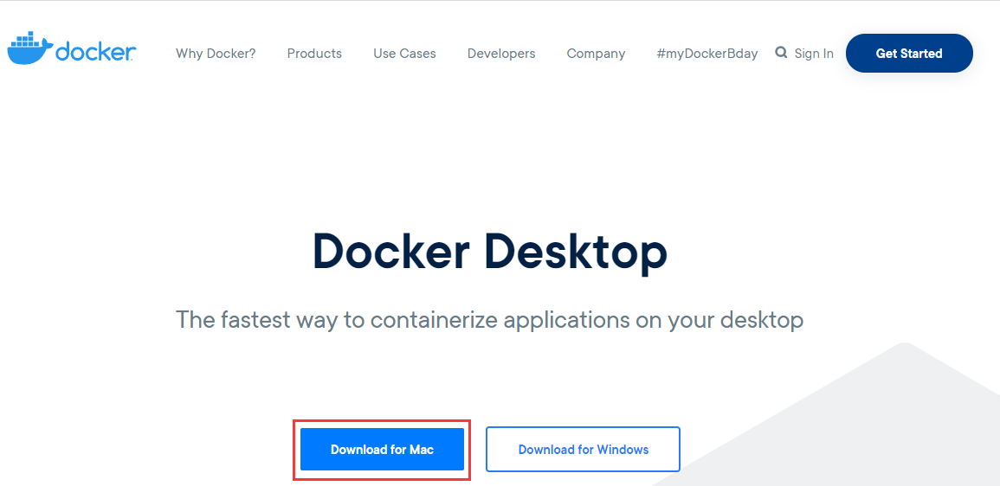
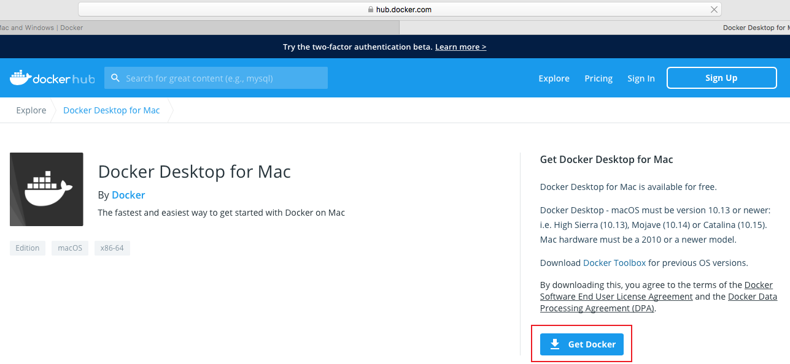
安装
- 直接拖拽安装。
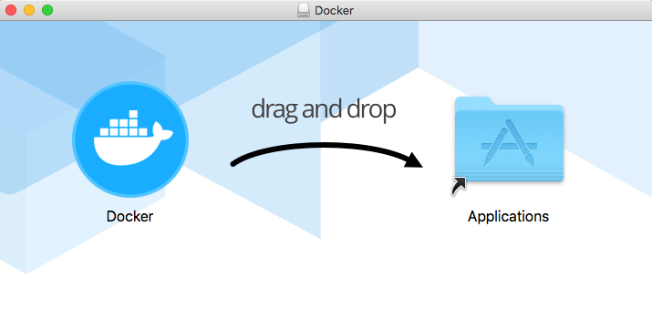
- 然后启动它。
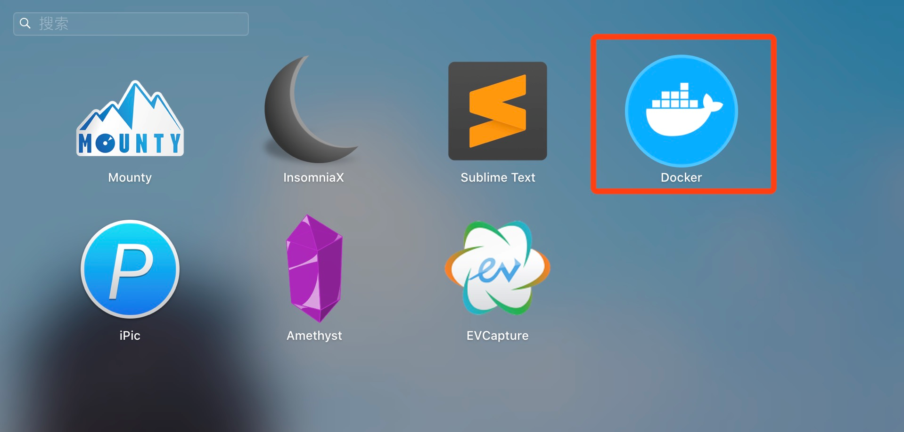
启动中：
启动后：
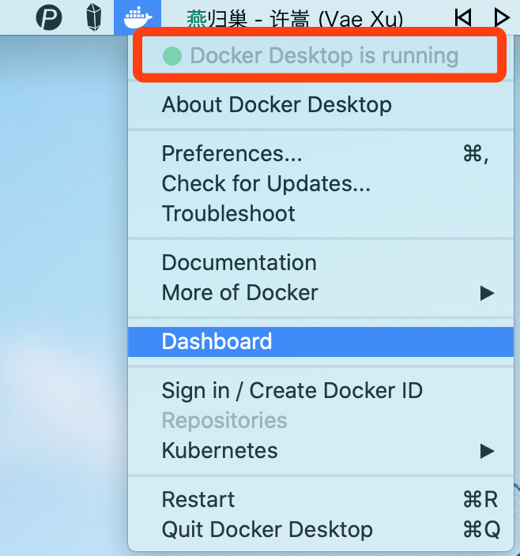]
测试
可以输入下面命令进行测试。
1 | docker version |
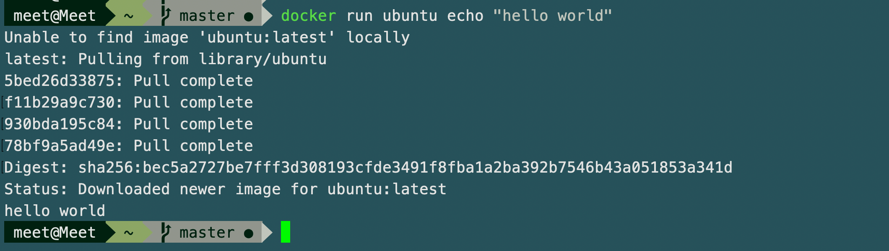
OK，完事了。
for-Windows
由开头的图我们知道，Windows中运行docker也是要借助虚拟机的，所以，来看如何安装吧。
系统要求
windows7及以上系统
来看安装。
下载boot2docker
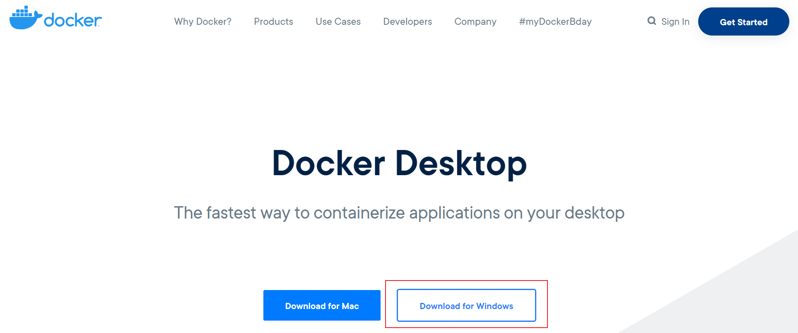
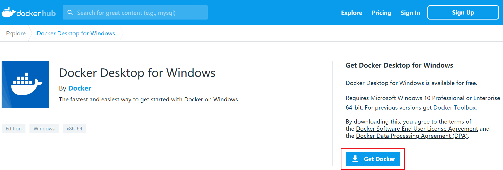
安装
- 下载到本地是exe文件，双击exe文件进行安装和配置。
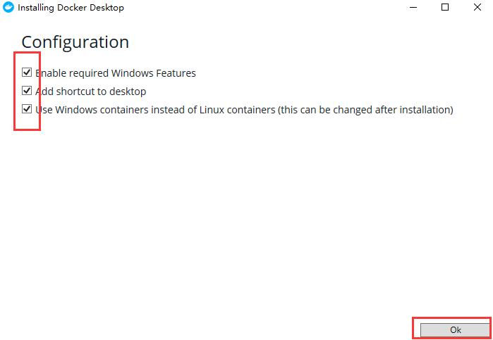
- 重启。
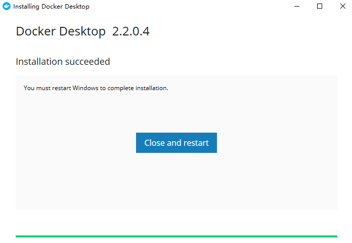
当你重启后，打开桌面快捷方式，会发现任务栏多了一个docker图标。
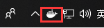
运行
当你打开桌面快捷方式后，docker将启动在任务栏；然后你可以win + R打开终端，输入命令来进行测试。
1 | # 查看版本 |
可能遇到的问题
下载镜像超时
windows环境
由于docker默认的镜像源是国外的，很可能遇到下载失败的问题，比如这样的：
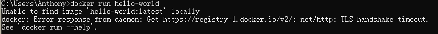
解决办法，点击任务栏docker，然后点击settings。
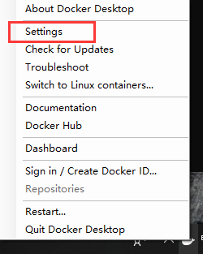
然后在Docker Engine选项将https://docker.mirrors.ustc.edu.cn/添加到registry-mirrors中去。
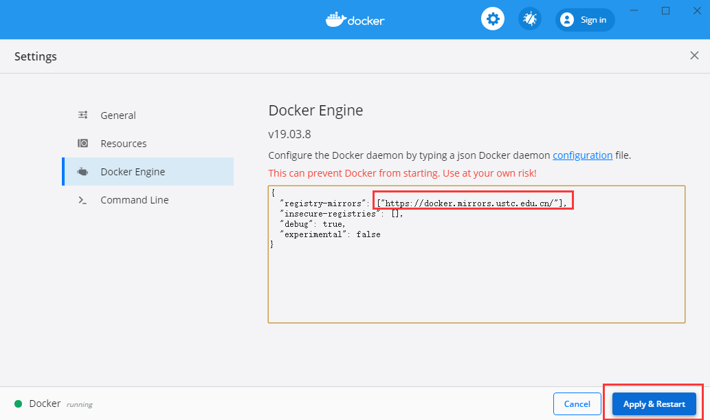
下面列出国内的常用源：
| 来自 | 源 |
|---|---|
| 网易 | http://hub-mirror.c.163.com |
| Docker 官方中国区 | https://registry.docker-cn.com |
| 中国科技大学 | https://docker.mirrors.ustc.edu.cn |
| 阿里云 | https://pee6w651.mirror.aliyuncs.com |
1 | 设置国内镜像 |
see also：
docker：CentOS安装 docker和默认安装目录
如何进入、退出docker的container
Centos7上安装docker
Ubuntu16.04安装docker
https://blog.csdn.net/BigData_Mining/article/details/87869147
作者： 听雨危楼
出处：https://www.cnblogs.com/Neeo/articles/11945963.html
版权：本作品采用「署名-非商业性使用-相同方式共享 4.0 国际」许可协议进行许可。
仰望星空,脚踏实地